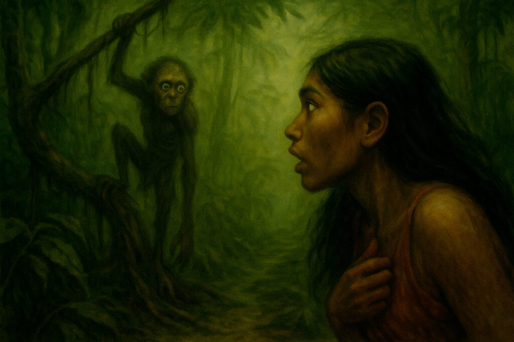

El Tunche o también conocido como Tunchi en algunas partes de la selva peruana, es una de las leyendas amazónicas mas conocidas junto con el Chullachaqui y el Ayaymama.
Según cuentan los lugareños, el tunche es el espíritu de un hombre atormentado y que ahora, vaga totalmente endemoniado entre lo profundo de la exótica selva, acercándose lentamente a sus victimas sin emitir sonido alguno y, cuando ya esta cerca de aquellos que se atreven a andar solos por la selva, silba, anunciando la muerte del que lo escucha.
Cuenta la leyenda que su alma endemoniada, que se hace presente a través del sonido en forma de un silbido de ave, vaga por las noches oscuras de la selva, como alma en pena.
Algunos dicen que podría tratarse de una simple ave, otros se van mas por lo espiritual y dicen que es un espíritu del mal “diablo” que goza aterrorizando a la gente.
Aun así, nadie lo ha visto, y todos lo reconocen con temor cuando en plena oscuridad se empiece a escuchar el silbido penetrante “fin…fin…fin…” que por instantes se pierde en lo profundo del monte a lo lejos, pero vuelve a silbar ya en el techo de una casa o a la orilla de un rio.

Los nativos que conocen la historia dicen que si oes el silbido del Tunche, debes de tener mucho cuidado. Nunca debes decir que no oyes nada. Si lo hace, su desgarrador silbido solo se hará mas fuerte sintiendo como su presencia se te acercará cada vez más.
Eso sí, jamás se te ocurra responder su silbido. Si lo haces, el tunche vendrá por ti a matarte de la forma más horrible imaginable.
Burlarse de este ente o insultarlo, puede costarle caro al desafortunado bromista, ya que lo hará enfurecer y entonces atacara con mayor insistencia, silbando… silbando… lo perseguirá tanto que hasta el mas valiente terminara entrando en pánico, y podrá llevarlo hasta la locura o hasta la misma muerte.
Quienes fueron los pocos afortunados de salvarse de morir llevados por el Tunche, han perdido la razón; de repente por la aparición o al endemoniado silbido de su presencia.
Sobre que les pasa a aquellos quienes no lo lograron, es incierto, no se sabe si los abandona a su muerte o mueren de hambre o devorados por algún otro animal, o sean devorados por el mismo Tunche.
El mal puede tener diferentes formas en las que se presenta.